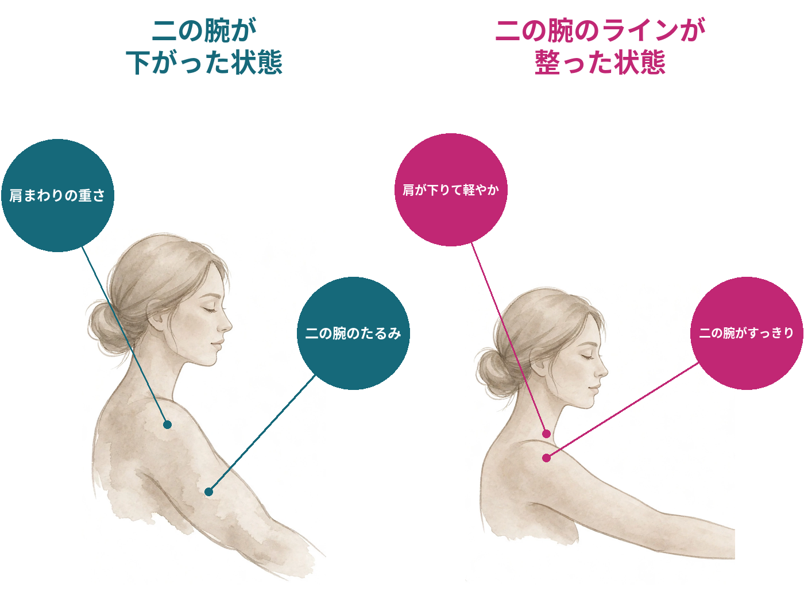

二の腕のたるみ
美容整体ステラ・ポラリス東三国｜大阪市淀川区東三国・東三国駅徒歩5分・女性向け

振袖のように揺れる二の腕を、すっきりしたラインへ
半袖やノースリーブの季節になると気になる二の腕のたるみ。腕の裏側は、日常生活で使う機会が少ない筋肉がある場所で、姿勢の崩れや巡りの滞りが重なると、たるみが目立ちやすくなります。肩が前に巻いた姿勢では、二の腕のラインも重く見えがちです。このページでは、二の腕がたるむ仕組みと、肩まわりから整えてすっきりしたラインを目指す当サロンでのケア、ご自宅でできるセルフケアをご案内します。二の腕は、自分では見えにくく、ケアの後回しになりやすい部位です。半袖の季節になってから慌てるのではなく、姿勢と巡りの両方から少しずつ向き合うことが大切です。
ご予約はこちら（Coubic）こんなお悩みありませんか
- 腕を振ると、二の腕の裏側が揺れる感じがする
- 半袖やノースリーブを着ると、腕の太さが気になる
- 写真に写った自分の腕が、思ったより太く見える
- 肩が前に巻いていて、腕のラインが重く見える
- 腕がむくんで、夕方には重だるく感じる
- 二の腕を触ると、冷たく感じることがある
- デスクワーク中心で、腕を大きく動かす機会が少ない
当てはまる項目が多いほど、姿勢の崩れと巡りの滞りが、二の腕のラインに影響している目安とされています。二の腕は、肩まわりと一緒に整えることが近道です。次のセルフチェックで、肩の位置の傾向を確かめてみましょう。二の腕の状態は、写真で見比べると変化に気づきやすくなります。気になる方は、同じ角度で撮った写真を残しておくのもおすすめです。
簡単セルフチェック（肩の位置チェック）
鏡の前に立って、肩と腕のラインを確かめる簡単な方法です。
- 鏡の前に自然に立ち、横から肩と腕のラインを見ます。
- 肩が耳より前に出ていないか、腕が体の横より前に下がっていないかを確認します。
- 肩が前に出ている場合は、姿勢の影響で二の腕のラインが重く見えやすい目安と言われています。
※これは診断ではありません。ご自身の状態の傾向を知る目安としてお使いください。
二の腕のたるみの原因と仕組み
二の腕の裏側の筋肉
二の腕の裏側には、腕を後ろに伸ばすときに使う筋肉があります。この筋肉は日常生活で使う場面が少なく、使う機会が減るほど、ラインがゆるみやすくなると言われています。図1のように、二の腕のラインは肩の位置とも連動しています。たるみは「太さ」だけでなく「位置と張り」の問題でもあるのです。

図1 二の腕のラインと肩の位置の関係、ラインが整った状態のイメージ。体の状態には個人差があります。
姿勢との関わり
肩が前に巻いた姿勢では、腕が体の前に下がり、二の腕の裏側が常にゆるんだ位置になります。逆に、肩が開いて背筋が伸びた姿勢では、腕のライン全体がすっきり見えます。姿勢を整えることは、二の腕の見え方を変える土台づくりです。夕方になると腕が重く感じる方は、むくみの影響も考えられます。腕を心臓より高い位置で休ませる習慣は、巡りを助ける簡単な工夫です。
巡りとむくみ
腕は心臓から遠く、巡りが滞るとむくみやすい部位です。デスクワークで腕を動かさない時間が長いと、夕方には腕が重だるく感じることがあります。肩まわりから巡りを助けることで、腕の軽さとラインの両方にアプローチできます。また、脇の下の巡りの滞りも、腕の重さに関わります。腕を大きく回す動きは、脇まわりまで動かす意味でも役立ちます。
冷えと脂肪のつきやすさ
二の腕は冷えやすい部位でもあり、触ると冷たく感じる方は少なくありません。巡りが滞りやすい場所は、老廃物も溜まりやすいと言われています。温めて動かす習慣が、ラインづくりの基本になります。
セルフケアで足りる場合・サロンケアが向く場合
たるみが軽く、腕の体操や姿勢の見直しを続ける余裕がある場合は、まずご自宅でのセルフケアを続けて様子を見る方法があります。一方で、肩の巻きが強く姿勢から整えたい、むくみも重なって腕が重い、自分のラインをプロの目で確認したいという場合は、サロンでのケアが向いている目安になります。サロンでは、肩まわりから二の腕までを整え、施術後に「腕が軽い」「ラインがすっきり見える」と感じやすい状態を目指します。どちらが正解というものではなく、今の状態に合わせて選ぶことが大切です。施術では腕全体の張り具合を確認し、重点的にケアする範囲を一緒に決められます。
当サロンでのケア
当サロンの二の腕ケアは、「肩の位置から整え、二の腕のラインがすっきり見える姿勢」を目指す組み立てです。まず肩の位置と腕の巡りの状態を一緒に確認し、部位と目的に合わせて3つの手技を組み合わせます。
美容整体：肩の位置と背骨のラインを整え、腕が自然な位置に下がる姿勢の土台をつくることを目的に。後ろ姿全体の印象づくりを支えます。
アロマオイルマッサージ：二の腕から肩、脇まわりをオイルで流れるようにゆるめ、巡りが流れやすい状態を目指します。むくみの重さにもアプローチします。
もみほぐし：固まりやすい肩や肩甲骨まわりをほぐし、腕の動きを引き出すことを目的に進めます。
ケアを通して目指すのは、こんな変化です。
- 二の腕のラインがすっきり見える姿勢へ
- 肩が開いて、腕全体が軽く感じる状態へ
- むくみが流れやすく、夕方の腕の重さが軽い印象へ
- 後ろ姿のラインが整って見える土台づくりへ
- 腕の体操の続け方を知り、日常でラインを保ちやすい状態へ
施術の仕上げには、二の腕の裏側を使う簡単な体操や、姿勢を保つコツもお伝えします。ラインづくりは、日々の小さな積み重ねが支えます。半袖の季節の前に始める方も多いケアです。見えにくい部位こそ、写真で記録しておくと変化に気づきやすくなります。
施術の流れ
ご来店後、気になる部位やお悩み、ご希望の強さなどをうかがいます。完全個室のため、周りを気にせずお話しいただけます。
肩の位置や腕の巡りの状態、姿勢のクセなどを一緒に確認し、その日の状態に合わせた施術の進め方をご案内します。
美容整体を中心に、ご希望に応じてアロマオイルマッサージ、もみほぐしを組み合わせて進めます。強さは途中でも調整できます。
施術後の状態を確認し、ご自宅で続けやすいセルフケアのポイントをお伝えします。次回の目安についても、ご希望があればご案内します。
料金
| コース | 通常価格 | キャンペーン価格（12/25まで） |
|---|---|---|
| 80分 | 8,000円 | 3,000円 |
| 100分 | 10,000円 | 4,000円 |
| 120分 | 12,000円 | 5,000円 |
クリスマスキャンペーンは12月25日まで、ご新規様もリピーターの方も対象です。施術内容は当日の状態とご希望に合わせて組み立てます。
ご自宅でできるセルフケア
- 腕の後ろ伸ばし体操：片腕を頭の後ろに回し、もう一方の手で肘を支えて、二の腕の裏を伸ばします。左右20秒ずつが目安です。
- 壁押し体操：壁に手をついて、ゆっくり腕立て伏せのような動きを10回。二の腕の裏側を使う感覚を覚える体操です。
- 腕回し：両腕を横に広げ、小さな円を描くように前回し・後回しを各20回。肩まわりの巡りを助けます。
- 脇まわりのほぐし：反対の手で脇の下をやさしくもみほぐします。巡りの出口をゆるめるつもりで、左右30秒ずつ行ってください。
ご自宅でのケアに：セルフケア資料ライブラリ（無料）
このお悩みに合わせたセルフケアの考え方を、無料の資料ライブラリでご紹介しています。
セルフケア資料ライブラリを開く →
受診の目安
腕のしびれや力が入りにくい感じがある場合、急に片側だけ腫れたり痛みがある場合は、施術の前に医療機関への受診をおすすめします。気になる症状があるときは、まず医療機関でご相談ください。
よくある質問
Q. 初めてでも大丈夫ですか？
はい。当サロンは完全予約制・完全個室で、1日3組までのご案内です。最初にカウンセリングで気になる部位や姿勢のクセをうかがい、無理のない内容から始めます。施術の前後で「腕が軽くなった」「肩が開いた」といった感覚の違いを一緒に確認しながら進めますので、初めての方も安心してご利用いただけます。
Q. 施術は痛いですか？
強さは、ご希望をうかがいながら調整します。二の腕はオイルで流れるように進める心地よいケアが中心です。感じ方には個人差がありますので、施術中も遠慮なくお声がけください。
Q. コースはどう選べばいいですか？
80分・100分・120分のコースがあり、ケアしたい部位の広さやお時間のご都合に合わせて選べます。二の腕とあわせて肩や背中までゆっくり整えたい方には、100分が選ばれることが多いコースです。迷われる場合は、ご予約の際にお気軽にご相談ください。
Q. 場所と予約方法を教えてください。
大阪市淀川区東三国、東三国駅から徒歩5分です。完全予約制のため、予約サイト（Coubic）またはLINE公式アカウントからご予約をお願いしています。
Q. 男性も受けられますか？
当サロンは女性向けのため、男性の方は、同じ東三国の男性専用整体院「北辰堂」をご案内しています。
施術者について
平賀建人（施術歴30年）
鍼灸師・登録販売者・アロマセラピスト・パーソナルトレーナーの資格を持ち、美容整体を中心に、アロマオイルマッサージ、もみほぐしを、その日の状態とご希望に合わせて組み合わせて施術します。このページの内容は、施術者の知識と経験をもとに作成しています。

料金・ご予約
ご新規様もリピーターの方も 12/25まで
80分 3,000円／100分 4,000円／120分 5,000円
通常価格は80分8,000円／100分10,000円／120分12,000円です。施術内容はご希望に合わせて組み立てます。
営業時間：月〜土 17:00〜23:00／日 10:00〜23:00（完全予約制）｜電話：080-2468-3086
大阪府大阪市淀川区東三国2丁目25番4号101（東三国駅徒歩5分）